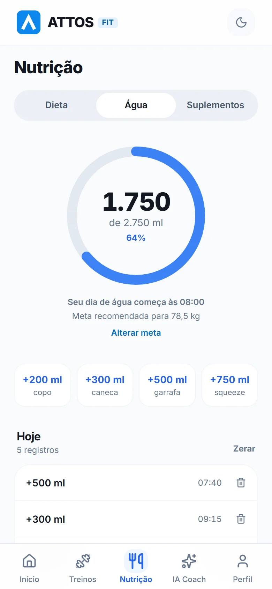
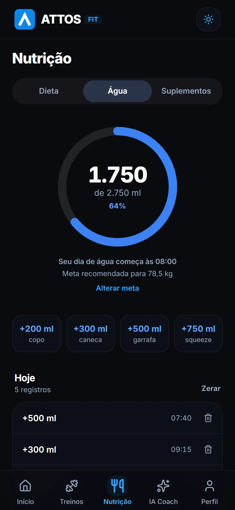

A água ficou pra depois de novo?
O Attos lembra na hora certa, e você registra o copo em um toque.
Baixar no Google PlayPara Android. Registrar treinos é grátis para sempre.
- Lembretes nos horários que você escolher, com horário de silêncio
- Meta de água calculada pelo seu peso
- Também monta seu treino, registra cada série e mostra sua evolução

